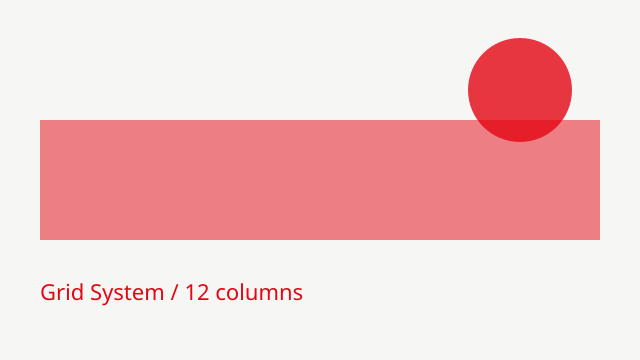

用三十行 CSS 做一套网格系统
先承认一件事：过去我每次新建项目都会从上一份代码里把 grid 相关的样式抄过来，抄了三年，从来没想过它为什么长这样。这次决定把它拆干净，看看最少需要多少行。
答案是三十行左右。核心不在 grid 本身，而在把间距和列宽收敛成两个自定义属性。一旦这两件事定了，页面上的每个区块都只是同一个系统的不同组合，而不是各写一份 margin。
剩下的工作反而变难了：要忍住不为某一个特别的区块破例。破例一次很轻松，三次之后系统就名存实亡。这大概是写代码和写文章共同的难处。
